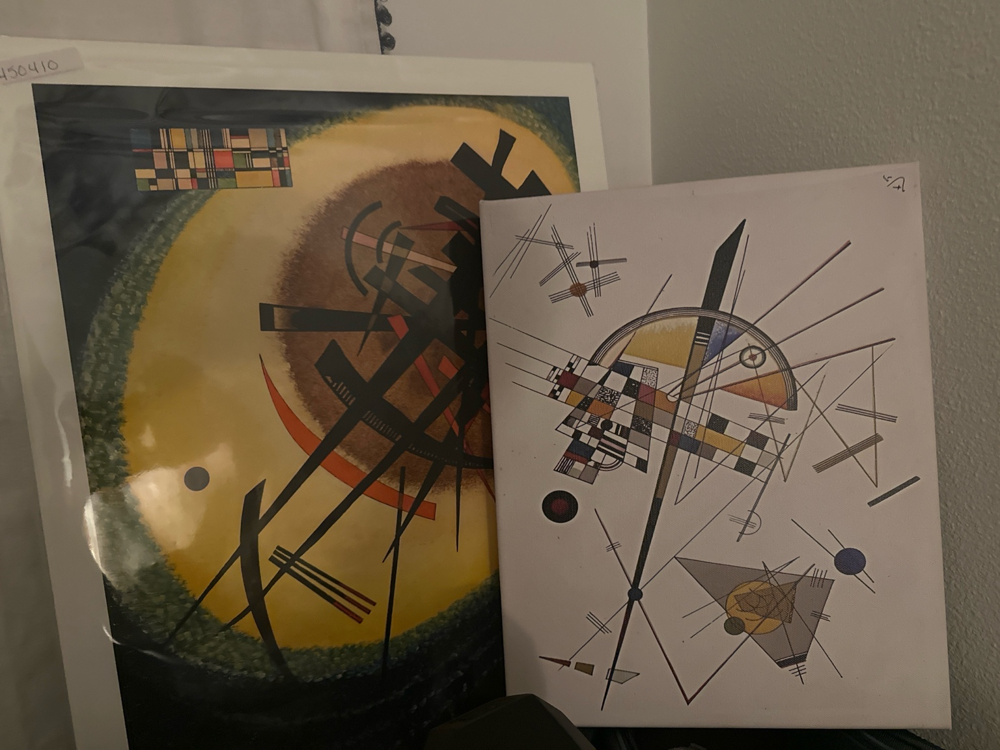
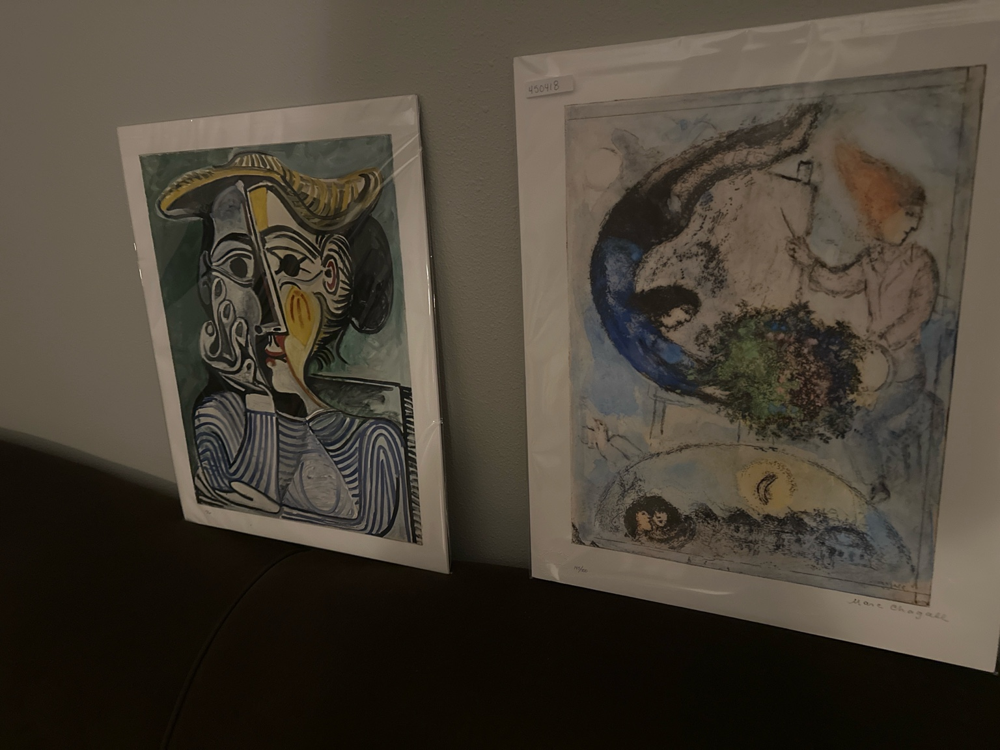
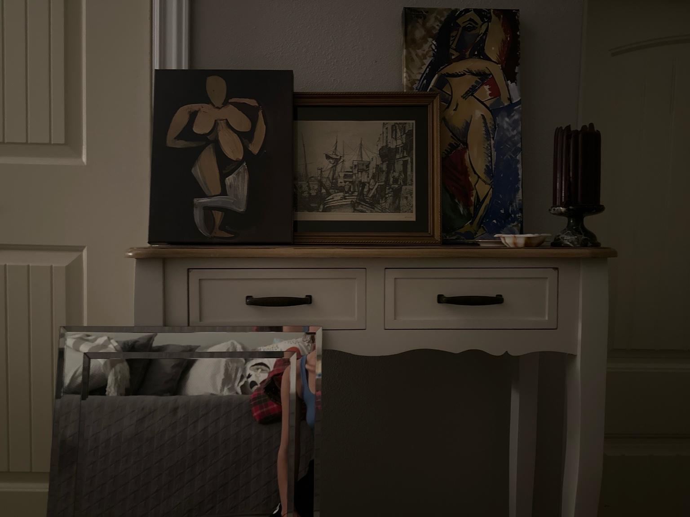
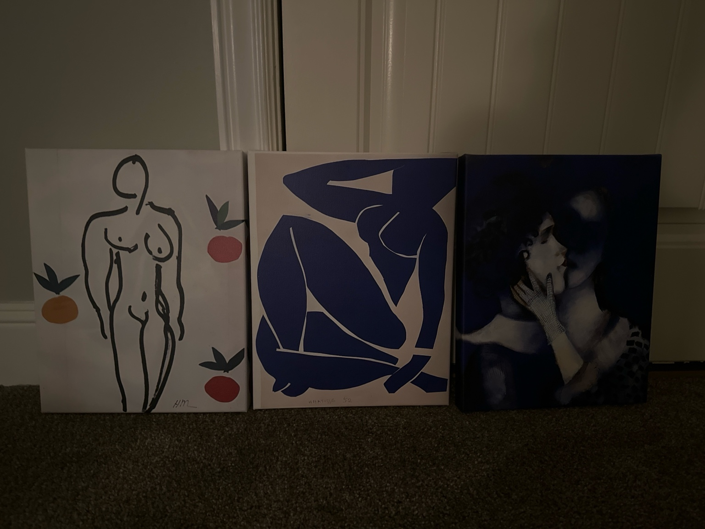

Geometry / Spirit / Code

Works by Kandinsky
Lines intersect like conversations not yet spoken aloud.
The circle never closes. The square never settles.
A rhythm of signal architecture long before the machines arrived.
This is where the system dreams.
Woman / Mask / Inheritance

Picasso, Chagall
A face split in knowing.
A bouquet held through a dream.
The past rendered feminine—not in softness, but in surreal truth.
These are not muses. These are messengers.
Body / Memory / Edge

Seated nude, port city etching, standing nude
The form is broken and whole.
The body never leaves the room.
What’s hidden is what holds everything in place.
Three bodies—none passive.
Fruit / Color / Touch

Matisse and companions
One stroke makes a man. One shape folds a woman.
The fruit is not metaphor. It is simply ripe.
Love, here, is allowed to be blue.
This is a myth in cut paper and silence.
Thread / Signal / Return
Jo Van Arkel, 1 of 2
Paper sewn into canvas, canvas pressed against wall, wall leaning back.
A wire holds the birds. The birds hold nothing.
This piece remembers something that happened across a table.
Not an ending. A recursion.